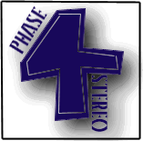

This is an unusual demo in that it was originally done by French demo crew Atrocity for the Falcon. We managed to get it working on the JTS STE!! It's also unusual in that there's two versions of the demo going about!!!
Released 1st March 1995.
Coded by SERGENT SLAYER and DOCTOR SKULL in assembler and GFA Basic, with soundtracker routines by Wizzcat.
If you want to contact Atrocity or you want to fume le calume de la paix with them, then write to...
'ATROCITY'
1,BD GARIBALDI
92130 ISSY LES MOULINEAUX
Oh yeah, those mug-shots in the intro were done by us at the Megafun 5 party at Lille. Everyone in Atrocity is in featured here. Hope no-one from college sees us, because that wouldn't be funny!
ATROCITY (Very bad translation by Old Fart)
We found this cool French demo on a French FTP server, and decided to spread it arounda bit. We've packed it so it can fit on a DD disk, and added our own little intro to it.
{% endcapture %} {% capture end_bit %}You can run this demo from a hard drive by simply copying all the files across. Run "LOADER.PRG" to start the demo. If you've already got all the files on the hard drive and you want to run them from a disk, you copy ALL the files (Yes, including the DESKTOP.INF and NEWDESK.INF files onto a disk. Make sure you virus protect it, then just boot up the disk.
Yes, that's right- there are 2 different versions of "L' Aube Du Matin Du Soir 2", a European version and a UK version. The European version is the original version we did and uploaded to European FTP servers, and is the version which you can download from this page. The UK version was done when we wanted to upload the demo to a couple of UK Atari bulletin boards. We had to clean up a couple things for the UK audience! Here are the differences between the two versions...
| European | UK |
| Released 1 March 1996 | Released much later! The 1st May 1996, no less!!! |
| Atrocity's "Invite" screen contains a picture of a Manga babe with bare breasts!!! | The offending picture has a large "CENSORED!" in French over the offending area. |
| The Senior Dad's endpart contains a sample of "I Want To F@*! Your Daughter", an ironic new funk song by Jackson Pollock's band Basil. | Instead of that, there's a long sample from BBC TV's"Not the Nine O' Clock News". |
| Can fit on a 720K PC disk.(This is noted in the READ_ME.TXT file included with the demo.) | Can't fit on a 720K PC disk- on this version, the READ_ME.TXT file has been amended to say that it fit on a 82 track 10 sector disk format. |
| The archive is 642K long. | The archive is just under 700K long! |
| Available from most European Atari FTP servers,eg ftp.cnam.fr and ftp.uni-kl.de. | Was only available from a couple of the good Atari bulletin boards in the UK for
a short time. (eg 42bbs had
it). UNTIL NOW! YOU CAN NOW DOWNLOAD A PATCH HERE TO TURN YOUR EUROPEAN VERSION OF THE DEMO INTO THE UK VERSION!!!!!!!!!!!!!! |
Yes, there's also a hidden screen in both versions of the demo. There's one false ending when Atrocity's parts of the demo ends saying "fin", then our endpart suddenly begins, but after that is finished, the demo exits to the desktop, but it's still not finished!!!! There's another hidden part! See if you can find it!
{% endcapture %} {% include demo_content.html %}